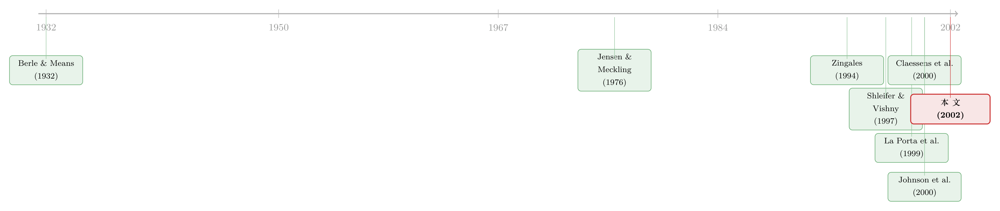

谁才是这家公司真正的主人？——把欧洲 5232 家公司的控制权一层层剥到底
本文读的是 Faccio & Lang (2002, Journal of Financial Economics)：他们顺着控制链一层层往上追，把西欧 13 国 5,232 家上市公司的「终极所有人」找了出来——结果是，伯利-米恩斯笔下那种股权高度分散的公司只占 36.93%，而被家族牢牢攥在手里的公司占了 44.29%；在比利时、意大利、挪威、瑞典、瑞士这几个国家，大股东手里的「控制权」还系统性地超出了他们真正掏的「钱」。
1 一个被讲了七十年的「常识」，其实是个例外
打开任何一本公司金融的教科书，开篇几乎都要请出伯利和米恩斯 (Berle and Means, 1932)。他们在《现代公司与私有财产》里描绘了一幅深入人心的图景：现代大公司的股权高度分散在成千上万的小股东手中，没有谁说了算，于是「所有权」与「控制权」彻底分离，公司的实际掌控权落到了职业经理人手里。后来詹森和梅克林 (Jensen and Meckling, 1976) 顺着这条路，把整套代理成本理论建了起来——故事的主角，永远是「分散的股东」对「自利的经理人」。
但这是真的吗？
一个自然的问题是：如果你真的去一家家公司的股东名册上数，会不会发现根本不是那么回事？Shleifer 和 Vishny (1997) 在那篇著名的公司治理综述里就已经敲响了警钟：大股东其实无处不在，连发达国家也是。真正把这件事做成实证的，是 La Porta、Lopez-de-Silanes 和 Shleifer (1999)——他们追踪了 27 个国家、每国 30 家大公司的控制链，第一次系统地告诉世人：伯利-米恩斯式的分散所有权，是少数派。紧接着 Claessens、Djankov 和 Lang (2000) 把同样的活儿在东亚九国的 2,980 家公司上又干了一遍，发现少数几个家族就能控制一国股市相当大的一块市值。
这条线索其实和本博客反复讲过的一个主题相通：当法律保护不力时，谁来约束大股东？关于这一点，可参见《把法律写成一个「被抓的概率」：投资者保护如何长出一国的股市》。
然后，缺口就出现了：欧洲。La Porta 等人每国只看 20 家最大的公司，样本太薄；而欧洲那些「中小盘」公司、那些金融公司，到底掌握在谁手里，没人认真数过。Faccio 和 Lang 这篇文章要补的，正是这一块。他们的野心很朴素，也很笨重——不抽样，几乎把整个西欧上市公司池子一网打尽。
2 「谁说了算」这件事，怎么算？
要回答「这家公司真正的主人是谁」，先得把两个概念拧清楚：你掏了多少钱，和你说了多少话。这两件事在一股一票的世界里是一回事，但现实世界从来不是。
作者把「掏的钱」叫做 现金流权 (cash-flow rights)，把「说的话」叫做 控制权 / 投票权 (control / voting rights)。沿着一条控制链，二者的算法截然不同。
考虑一条链：某家族持有 X 公司 25%，X 公司又持有 Y 公司 20%。那么这个家族在 Y 公司里：
$$ \text{cash-flow rights} = 0.25 \times 0.20 = 0.05 $$
现金流权是沿链相乘——钱是会被一层层稀释的，因为每往上一层，分到的利润都要打个折。
而控制权呢？
$$ \text{control rights} = \min(0.25,\ 0.20) = 0.20 $$
控制权取的是这条链上最弱的一环 (the weakest link)。直觉很硬：你要想真正指挥 Y，你得先牢牢攥住 X；而你对 X 的控制力，就卡在你那 25% 上；可在 Y 这一端，X 本身也只持有 20%，所以你能调动的投票权，被这条链里最细的那一截掐死，是 20%，不是 5%。
于是，控制权 20%，现金流权只有 5%——这中间 15 个百分点的「楔子」，就是大股东能用别人的钱去办自己事情的空间。这正是后来 Johnson、La Porta、Lopez-de-Silanes 和 Shleifer (2000) 命名为 掏空 (tunneling) 的那道暗门的源头。
但真正关键的一步在于：作者不止看一条链。如果一个终极所有人通过多条控制链 (multiple control chains) 同时持有 Y，每条链的每一环都至少 5%，那就要把各条链的控制权加总。再叠加上 双重股权 (dual class shares)——同股不同票——和 金字塔结构 (pyramids)，一个人能用很少的钱撬动很大的盘子。
文中那个瑞典 Nordström 家族控制 Realia 公司的例子最为传神：Columna 这家中间公司，靠着 A 股一股一票、B 股一股十分之一票的设计，只持有 Realia 35% 的现金流权，却控制了 48.1% 的投票权。钱和话，就这样被掰开了。
这里有个容易混淆的点：控制不是「拥有」。作者沿用既有文献的惯例，把 20% 投票权设为控制门槛（也辅以 10% 的稳健性讨论）。低于门槛，公司就被记为「分散持有 (widely held)」。所以本文所有结论都挂在这个 20% 的钩子上——这一点我们后面还要回来掰扯。
3 一桩笨功夫：5232 家公司的「户口普查」
这篇论文真正让人敬佩的，是数据。
作者明确拒绝偷懒。他们指出，很多前人研究依赖的 Worldscope 数据库覆盖太差——比如西班牙 632 家上市公司，Worldscope 只收了 176 家；更糟的是，缺失的所有权数据常被它直接记成「零持股」，这会系统性地把一国公司误判成「分散持有」。所以作者的原则是：只要能拿到官方源（多为交易所的持股申报文件），就绝不用 Worldscope，后者只在某家公司实在查不到时才动用。
为了保证能交叉核对，他们忍痛剔除了拿不到可靠官方数据的卢森堡、希腊、丹麦和荷兰，最后留下 13 个国家：奥地利、比利时、芬兰、法国、德国、爱尔兰、意大利、挪威、葡萄牙、西班牙、瑞典、瑞士、英国。
筛选过程也一丝不苟。13 国总共 5,547 家上市公司，剔掉无所有权数据的 167 家、被外资多数控股却追不下去的 87 家、用代持账户 (nominee accounts) 藏身的 61 家，最终样本 5,232 家，覆盖了这些国家 94.32% 的上市公司。数据基准期为 1996 至 1999 年——作者特意说明，所有权结构本来就相当稳定，时点上的小错位无伤大雅。
他们把终极所有人分成六类：家族（含个人、及任何未上市公司）、分散持有的金融机构、国家、分散持有的非金融公司、交叉持股、以及其他（慈善机构、员工、合作社等）。其中有一处处理值得留意，也埋下了日后争议的种子：凡是追到一家「未上市公司」就追不下去的，一律归类为「家族」。作者为此专门做了佐证——比如他们从 Wer gehört zu wem 数据库抽了 500 家德国未上市公司，发现家族（本土加外国）是其中 90.6% 的终极所有人；意大利 AIDA 库里 3800 家未上市公司，这个比例高达 99.4%。所以「未上市公司=家族」这个近似，至少在数据上是站得住的。
4 数出来的欧洲：家族的大陆
把这 5232 家公司一个个追到底，欧洲的全貌浮现出来了。核心的两个数字前面已经给过——分散持有 36.93%，家族控制 44.29%——但真正有意思的，是它们怎么分布。
首先是地理上的撕裂。 分散持有的公司主要扎堆在英国和爱尔兰，这两个普通法国家撑起了「伯利-米恩斯」的招牌；而一过英吉利海峡，到了欧洲大陆，家族控制就成了主旋律。这和 La Porta 等人 (1997, 1999) 反复强调的「法律渊源决定治理」一脉相承——普通法对小股东保护更强，分散持股才敢出现。
接着是规模与行业的分野。 金融公司、大公司，更可能分散持有；非金融公司、小公司，更可能落入家族之手。换句话说，你越往样本的「中小盘」里看，家族的影子就越浓——这恰恰是 La Porta 等人只盯着每国 20 家巨头时看不到的角落，也正是本文「不抽样」的价值所在。在某些大陆国家，国家 (State) 仍然控制着相当比例的公司，且尤其集中在最大的那些公司上。
然后是控制工具的使用。 双重股权这件「利器」，各国冷热不均：在比利时、葡萄牙、西班牙几乎没人用，但在瑞典、瑞士、意大利分别有 66.07%、51.17%、41.35% 的公司在用。金字塔结构用于控制 19.13% 的上市公司，多重控制链则只占 5.52%——而且它们更多被国家和分散持有的金融机构使用，反倒不是家族的偏好。还有一个反直觉的事实：53.99% 的欧洲公司只有唯一一个控股股东，孤零零地说了算；而超过三分之二的家族控制公司，其高管直接来自控股家族——所有权和经营权，在这些公司里压根没分家。
最后，于是反转出现了。 你可能以为，既然金字塔、双重股权这些工具到处都是，那现金流权和控制权一定到处都被掰得很开。但作者把账一算，结论是：整体上，所有权与控制权的显著背离，只发生在少数几个国家——比利时、意大利、挪威、瑞典、瑞士。在大多数地方，二者的缺口其实没那么夸张。工具的存在，不等于工具被用到极致。这是个克制而诚实的结论。
和 La Porta 等人 (1999) 的 20 大公司样本相比，本文发现：国家控制的更少、分散持有的更多、金字塔更少、双重股权更多。和 Claessens 等人 (2000) 的东亚相比：欧洲家族控制的公司比例更高，但每个家族控制的公司更少，顶级家族占全市场市值的比例更低。作者把这归因于亚洲较弱的法律执行——执法越弱，控股者越能用更少的钱、撒更大的网。
5 文献脉络：从「分散的神话」到「集中的事实」
把这条线索捋直，它的走向其实很清楚。
最早是伯利和米恩斯 (1932) 立下「分散所有权」这个范式，詹森和梅克林 (1976) 在其上盖起代理理论的大楼。这套叙事统治了半个世纪，直到 Shleifer 和 Vishny (1997) 在综述里指出大股东才是常态。真正的实证转折由 La Porta、Lopez-de-Silanes、Shleifer (1999) 完成——他们把「追控制链、找终极所有人」这套方法论确立下来，并和此前 La Porta 等人 (1997) 的「法律与金融」框架接通。Claessens、Djankov、Lang (2000) 随即把方法搬到东亚，量出了家族集中控制的程度。

Faccio 和 Lang (2002) 这篇，就站在 La Porta (1999) 和 Claessens (2000) 之间——它用欧洲的、近乎全样本的数据，补上了「中小公司+金融公司」这一大片空白，同时把现金流权/控制权的测量做得更细。它向后又喂养了一整条研究脉络：Johnson 等人 (2000) 的掏空理论需要这样的所有权图景才有意义；而控制权私利到底值多少钱，则由 Zingales (1994)、Nenova (2000)、以及本博客讲过的《同一家公司，两种股票，两个价格——控制权的价钱，写在一国的法律里》和《拍卖桌上量出来的「掏空」》继续追问。
6 评论与延伸（Q&A + 研究方向）
(a) 几个可能的疑问
Q：这篇文章和 La Porta 等人 (1999) 到底差在哪？不就是换了块地方重做一遍吗？
差别有三，且都实质。其一，样本：La Porta 每国只取 20 家大公司，本文几乎是 13 国的全样本（5232 家，覆盖 94.32%），因此能看见中小盘和金融公司——而结论恰恰显示家族在小公司里最强势，这是抽样会系统性漏掉的。其二，行业：本文纳入了金融公司，发现它们更倾向分散持有。其三，测量精细度：本文系统处理了多重控制链、交叉持股、双重股权对现金流/控制权楔子的影响。所以它不是「重做」，而是「填空+加细」。
Q：把所有「追不到底的未上市公司」都归为家族，会不会人为夸大了家族控制？
这是最该担心的一处。作者也意识到了，于是用德国（500 家）、意大利（3800 家）、法国、英国的未上市公司样本去验证：在德国 90.6%、意大利 99.4% 的未上市公司里，终极所有人确实是家族；而国家和大金融机构由于通常会被这些数据库收录，反而不太可能被误归。逻辑链是：未上市公司既不太可能被分散持有的公司控制（这类会被记录在案）、也不太可能被国家控制（国企多为上市），剩下最可能的就是家族。证据不算铁证，但相当扎实。
Q：20% 这个控制门槛是不是太随意了？换个门槛结论会不会翻盘？
门槛确实是个约定，作者主要用
20%、并以10%做稳健性讨论。文中 Montedison 的例子就很说明问题：在20%门槛下 Compart 是终极所有人，但在10%门槛下，Mediobanca 凭15.26%+3.77%=19.03%反而成了最大终极所有人。可见门槛会改变具体归属。不过「家族在大陆占主导、分散持有集中在英爱」这类横截面对比的结论，对门槛并不敏感。
Q：剔除了用代持账户藏身的 61 家公司，会不会把结论带偏？
方向是会高估「分散持有」的比例，因为代持恰恰用来隐藏真实大股东。但作者论证这个偏误很小：代持账户成为最大股东的公司不到 5%，且主要集中在英国、爱尔兰——而这两国本来就是分散持有比例最高的地方，所以这个偏误不太会扭曲跨国比较。
Q：所有权结构「相当稳定」这个假设可信吗？毕竟样本横跨 1996–1999。
这个假设来自 La Porta 等人 (1999) 的观察，本文沿用。它对当时大体成立——所有权变更是低频事件。但放到今天看，90 年代末正是欧洲大规模私有化的尾声，国家持股在快速退场，所以国家控制那一类的稳定性其实最弱。这也提示：用这套数据研究私有化前后的治理变迁，反而是个机会（见下）。
Q：这篇纯描述性的论文，为什么能上 JFE 并被引上万次？它「识别」了什么因果吗？
它几乎不做因果识别——它的贡献是测量。但好的测量本身就是稀缺品：没有这张欧洲所有权地图，后来关于掏空、控制权私利、法律与金融的大量实证研究都无从落地。它提供的是一套可被反复使用的「事实基础设施」，这正是描述性论文能产生持久影响力的方式。
(b) 几个可能的研究问题与提案
1. 终极所有权与公司债的代理成本
【经济故事】家族控制叠加金字塔，会拉开现金流权与控制权的楔子，理论上加剧对债权人的掏空动机；但家族「跑不掉、看重声誉」又可能降低违约风险（这正是《家族不会一走了之，所以债主睡得更安稳》的逻辑）。两股力量在欧洲家族企业里谁占上风，是个干净的问题。 【可行性】中。需把 Faccio-Lang 式的所有权楔子与欧洲公司债的发行利差/评级匹配。识别上可用同一发行人不同期债券、或国别投资者保护差异做横截面。数据可得，但欧洲公司债二级市场流动性数据较薄是难点。
2. 控制权楔子与债券流动性
【经济故事】所有权-控制权背离会恶化信息不对称（大股东知道得更多、且有掏空动机），逆向选择应当抬高其债券的买卖价差。这把「治理」和「流动性」两条线接了起来。 【可行性】中偏低。需要个券层面的流动性度量（如 TRACE 类数据），但欧洲缺乏统一的成交透明度数据；可退而求其次用 Bao-Pan-Wang 类的价格反转度量。识别靠所有权楔子的横截面变异，需控制规模、行业、国别。
3. 外资持有人能否替代缺位的法律保护？
【经济故事】在家族+弱保护的大陆国家，外国机构投资者的进入是否压缩了控制权楔子、改善了少数股东处境？这与本博客《外资真是「蝗虫」吗？》的关切直接相通——外资究竟是纪律约束者还是短期掠食者。 【可行性】高。Faccio-Lang 的所有权数据可与各国外资持股变动（如 EU 投资放开事件）做 DiD。识别上可借助具体的资本市场开放/指数纳入作为外生冲击。
4. 私有化退潮与「国家→家族」的控制权转移
【经济故事】90 年代末欧洲私有化大潮中，国企控制权流向了谁？是真的分散给了市场，还是被本土家族/金融机构接盘？这能检验私有化「改善治理」承诺的成色（参见《卖了一半的国企：当国家始终是那个「最大的股东」》）。 【可行性】中。需要私有化前后的终极所有权面板，本文的截面是起点，但要往前往后扩展时间维度，手工追链成本高。可聚焦少数几个私有化集中的国家（法、意）做案例式面板。
7 我的判断
这篇论文的贡献，是测量而非识别——它不试图证明任何因果，而是老老实实地把一张欧洲所有权地图画了出来，且画得比前人更全、更细。它的价值会随时间增长：今天几乎所有研究欧洲公司治理、控制权私利、掏空的论文，都绕不开这张地图。这是「事实基础设施」型论文的典范。
但要诚实地说出它的软肋。第一，是那个 20% 门槛和「未上市=家族」的近似——作者做了大量佐证，但归根结底，终极所有人的归类带着不可消除的测量噪声，这会传导进任何下游回归。第二，是纯横截面——它告诉你 90 年代末欧洲「是什么样」，却无法告诉你所有权结构如何随时间演化、又是被什么推动的；尤其在私有化剧烈进行的那几年，国家持股那一类的「快照」很快就会过期。第三，它停在了描述——背离的后果（对估值、对债权人、对小股东）本文只字未碰，这恰恰是它把舞台让给了后来者。
我最想看到的后续，是把这张静态地图动态化、并接上信用市场：当外资进入、当法律收紧、当一家公司从家族手里上市，控制权的楔子如何收缩，而这种收缩又如何写进它的债券利差与流动性。Faccio 和 Lang 给了我们一张地图；下一步，是看着地图上的边界如何移动。
参考文献
Barclay, M., Holderness, C. (1989). Private benefits from control of public corporations. Journal of Financial Economics 25, 371–395.
Bennedsen, M., Wolfenzon, D. (2000). The balance of power in closely held corporations. Journal of Financial Economics 58, 113–139.
Berle, A., Means, G. (1932). The Modern Corporation and Private Property. MacMillan, New York.
Claessens, S., Djankov, S., Lang, L.H.P. (2000). The separation of ownership and control in East Asian corporations. Journal of Financial Economics 58, 81–112.
Faccio, M., Lang, L.H.P. (2002). The ultimate ownership of Western European corporations. Journal of Financial Economics 65(3), 365–395.
Jensen, M., Meckling, W. (1976). Theory of the firm: managerial behavior, agency costs, and ownership structure. Journal of Financial Economics 11, 5–50.
Johnson, S., La Porta, R., Lopez-de-Silanes, F., Shleifer, A. (2000). Tunnelling. American Economic Review Papers and Proceedings 90, 22–27.
La Porta, R., Lopez-de-Silanes, F., Shleifer, A., Vishny, R.W. (1997). Legal determinants of external finance. Journal of Finance 52, 1131–1150.
La Porta, R., Lopez-de-Silanes, F., Shleifer, A. (1999). Corporate ownership around the world. Journal of Finance 54, 471–518.
Shleifer, A., Vishny, R. (1997). A survey of corporate governance. Journal of Finance 52, 737–783.
Zingales, L. (1994). The value of the voting right: a study of the Milan stock exchange experience. Review of Financial Studies 7, 125–148.